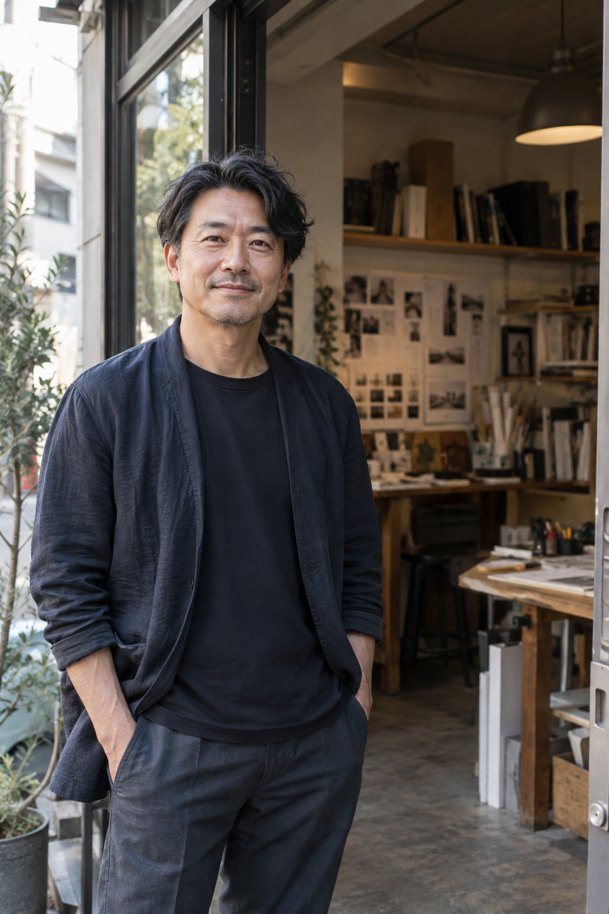

01 / STUDY
オンライン勉強会
デザインの考え方を、実例や対話を通して深める時間。聞くだけの参加から始められます。
デザインに向き合う、すべての人へ
つくる人が学び合う、
デザインコミュニティ。
ひとりの視点だけでは見つからない答えがある。作品を見せ合い、問いを交わし、明日の制作に持ち帰るための場所です。
デザインレビュー ｜ 実践動画 ｜ つくる人の交流
違う視点にふれ、考え方を増やす。
手を動かして、学びを自分のものに。
つくる人同士で、可能性をひらく。
※ このサイトはデモです。活動内容・参加条件は正式公開時にご案内します。
WHAT YOU GET
気になるところから、自分のペースで。見て、話して、試せる場をつくります。
デザインの考え方を、実例や対話を通して深める時間。聞くだけの参加から始められます。
制作の過程や判断の理由を動画で共有。自分の時間に合わせて繰り返し学べます。
分野や経験の違う仲間と話せる場所。うまくいったことも、迷ったことも持ち寄れます。

デモ用の生成イメージ。マスヤ本人の写真ではありません。FOUNDER STORY
はじめまして、マスヤです。
デザインには、すぐに答えの出ない時間があります。そんなとき、考えを言葉にし、違う視点を受け取れる場所があれば、次の一歩が見つかるかもしれません。
結果だけでなく、考えた過程や迷いも持ち寄れる。ワンビーコミュニティを、つくる人同士が互いの可能性を広げられる場所にしていきたいと思っています。
※ Founder Storyはデモ用文章です。経歴や実績は記載していません。